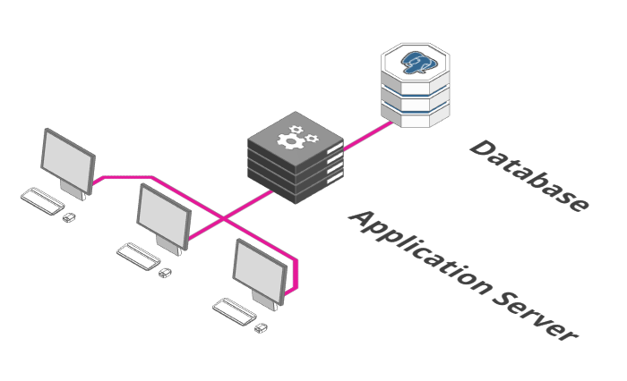
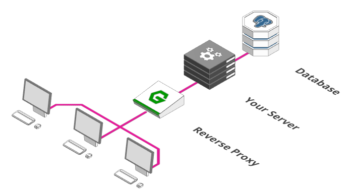
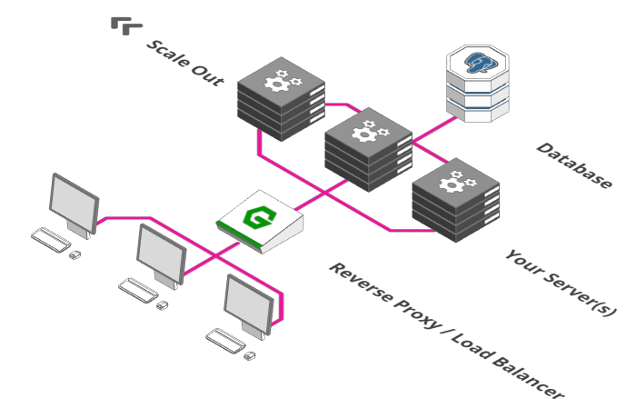
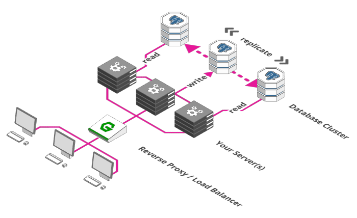
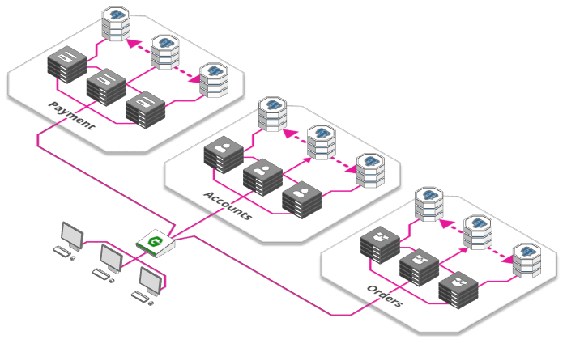
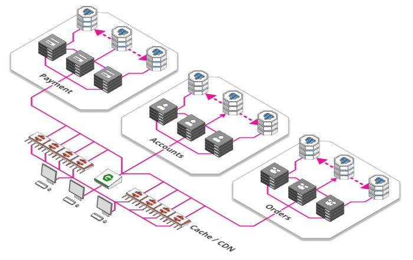
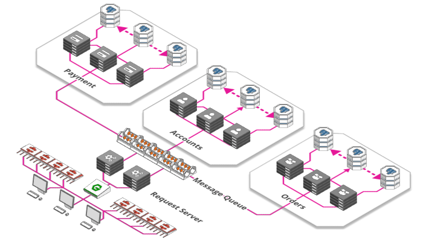
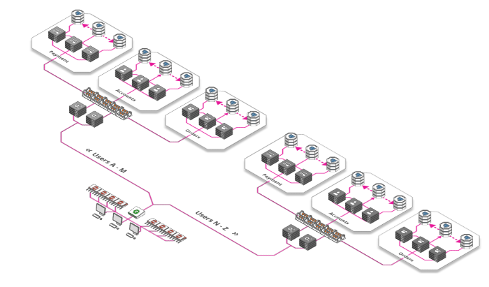
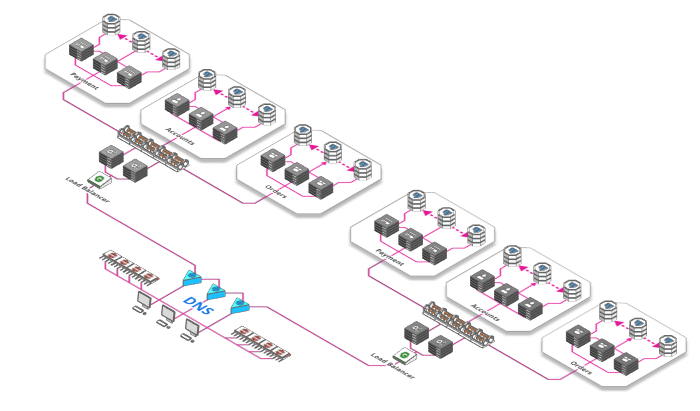

2020 01 19 🧙🏽♂️新人和非技术人员也能看懂的网站应用拓展
翻译自Scaling webapps for newbs & non-techies ，作者Wolfram Hempel
拓展是什么？
拓展分为横向与纵向；简单来说：
当然，你也可以称之为水平拓展与垂直拓展。
- 横向拓展（horizontal scaling）：并行地运行很多进程；
- 纵向拓展（vertical scaling）：在更强大的计算机上运行同样的程序；
今天，很少有人再纵向拓展，因为：
- 计算机的价格随着性能的提高呈指数增长
- 一台计算机只能如此之快，这对一台计算机可以垂直扩展的范围施加了严格的限制
- 多核CPU意味着即使一台计算机都可以有效地并行化-那么为什么不从一开始就并行化呢？
单个服务器+数据库

这也许是你的后端最开始的样子。一个单独的应用服务器运行着你的业务逻辑，一个数据库保存着数据。事情既简单又好，但是满足更高需求的此设置的唯一方法是在功能更强大的计算机上运行它-不好。
添加一个反向代理

添加一个反向代理是你准备架构的第一步。想一下酒店前台，也许你可以直接将客人带到房间——但是，你真的需要一位中间人来校验一位客人是否被允许进入，是否她的所有文件都齐全并且准备前去一个存在的房间。而且如果房间关闭，您希望有人用友好的声音告诉客人，而不是让他们陷入困境。这就是一个反向代理所做的工作。通常，代理只是一个接收和转发请求的过程。通常，这些请求将从我们的服务器发送到Internet。但是这里的请求来自互联网，需要路由到我们的服务器，因此我们将其称为“反向代理”。
这样的代理可以做这些事：
运行状况检查可确保我们的实际服务器仍在运行路由将请求转发到正确的端点身份验证（Authentication）可确保实际上已授予用户访问服务器的权限防火墙确保用户只能访问他们被允许使用的网络部分
以及更多。
引入一个负载均衡器

反向代理通常可以有负载均衡的功能。负载均衡的概念很简单，想象一下现在有100位用户需要支付，但是你目前只有一台支付服务器，一台支付服务器最多只能支持50位用户支付，你可以同时运行两个支付服务器。
一个负载均衡器的工作就是将请求按照配置的策略分到两个服务器，比如平均分配、按权重分配等等。
增加数据服务器

使用负载均衡器可以将负载分担给多个应用服务器，你看出了目前的问题吗？你可以利用负载均衡将负载分担给成千上万的应用服务器，但是数据库服务器只有一个。那么我们可以用同样的方式来拓展数据库吗？不幸的是不可以。这里的问题是一致性（consistency），我们系统的所有部分都需要就使用的数据达成一致。不一致的数据将导致很多问题，例如订单被处理多次，从同一个账户中重复扣款，以此类推；那么我们如何在确保一致性的同时拓展数据库？
我们可以做的第一件事是将其分为多个部分。一部分专门负责接收和存储数据，其他所有部分负责检索存储的数据。这种解决方案也称为主/从设置与读写分离。此处的假设是读的操作比写的操作次数多。此解决方案的优点是，可以保证一致性，因为数据仅写入单个实例，并从一个实例（从写入到读取）从那里流动。缺点是我们仍然只有一个数据库实例要写入。这对于中小型Web项目是可以的，但是如果您运行Facebook，它就不会这样做。
微服务

到目前为止，我们只处理一台服务器，该服务器可以完成所有工作：处理付款，订单，库存，为网站提供服务，管理用户帐户等等。这不一定是一件坏事-单个服务器意味着较低的复杂性，因此对我们的开发人员而言，头痛更少。但是随着规模的扩大，事情开始变得复杂和低效：
- 我们服务器的不同部分被不同程度地利用-对于每个用户登录，可能要处理几百次浏览量和要提供的资产，但是所有操作都是由同一台服务器完成的
- 我们的开发团队会随着我们的应用程序的发展而增长-但是，随着越来越多的开发人员在同一台服务器上工作，他们更有可能踩到彼此的脚趾。
- 仅拥有一台服务器意味着每当我们要上线新版本时，都必须完成所有工作并进行处理。每当一个团队迅速想要发布更新时，这就会导致危险的相互依赖，而另一团队仅完成了一半的工作。
应对这些挑战的解决方案是一种架构范例，已席卷开发人员：微服务。这个想法很简单-将您的服务器分解为功能单元，并将它们部署为单独的，相互连接的微型服务器。这有很多好处：
- 每个服务可以单独拓展，使我们能够更好地适应需求
- 开发团队可以独立工作，每个团队都负责各自微服务的生命周期（创建，部署，更新等）
- 每个微服务都可以使用自己的资源，例如自己的数据库
缓存和CDN

有什么比提高工作效率更好？根本不用工作！我们的网络应用程序很大一部分是由静态资产组成的，这些资产是永远不变的，例如图像，JavaScript和CSS文件，某些产品的预渲染目标网页等。无需在每个请求上重新计算或保留这些资产，我们可以使用“缓存”-一种小型存储，仅记住最后的结果并将其分发给所有感兴趣的人，而不会打扰底层服务器。
“内容交付网络”（CDN）-遍布世界各地的大量缓存，被称为缓存的“升级版”。这样一来，我们就可以从用户附近的商店向用户提供内容，而不必每次都在全球范围内发送数据。
消息队列

您去过游乐园吗？您只是走到售票柜台买票吗？可能不是-您最终可能会排队等待。政府机构，邮局和游乐园入口都是“次容量并行性”概念的绝佳示例-是的，它们是并行的：多个售票亭可以同时出售门票-但似乎永远不足以立即为每个人提供服务，结果，队列开始形成。
大型Web应用程序使用相同的概念。每分钟将数十万张图像上传到Instagram，Facebook和Co，其中每个图像都需要进行处理，调整大小，分析和标记-这是一个耗时的过程。因此，不必让用户等到他们的上传完成所有这些步骤。接收图像的服务器仅做三件事：
- 它存储未处理的原始图像
- 确认上传给用户
- 它在一大堆纸上添加了虚拟便签，指定需要做什么
从这里开始，此笔记由任意数量的其他服务器拾取，每个服务器都完成其任务之一，将其选中，然后将其放回堆中-直到完成待办事项列表。管理这堆笔记的系统称为“消息队列”。使用这样的队列有许多优点：
- 它使任务和处理器分离。有时需要处理大量图像，有时仅需要处理少量图像。有时有很多处理器可用，有时只有几个。通过简单地将任务添加到积压中而不是直接处理它们，可以确保我们的系统保持响应能力，并且不会丢失任何任务。
- 它使我们能够按需扩展。启动更多的处理器需要时间-因此，当许多用户尝试上传图像时，已经为时已晚。通过将我们的任务添加到队列中，我们可以推迟提供更多功能来处理它们的需要
好吧，如果我们按照上面的所有步骤进行操作，我们的系统现在就可以提供可观的流量了。但是，如果我们想做大的事情-真的做大了，怎么办？好了，还有一些选择：
分片

分片是：
Sharding is a technique of parallelizing an application's stacks by separating them into multiple units, each responsible for a certain key or namespace.
那到底是什么意思呢？实际上很简单：需要为20亿用户提供Facebook个人资料吗？将您的架构分解为26个迷你Facebook，每个Facebook用不同的字母为用户服务。亚伦·亚伯拉罕（Aaron Abrahams）？堆栈A. Zacharias Zuckerberg将为您服务？ Z栈是...
分片不必基于字母，而可以基于多种因素，例如位置，使用频率（高级用户被路由到好的硬件）等等。您可以根据需要以这种方式对服务器，数据库或堆栈的几乎任何方面进行分片。
域名系统

单个负载平衡器只能带您到您为止-即使您开始购买一些功能强大（且价格昂贵）的硬件负载平衡器，对其可以处理的请求数量也有严格的限制。
幸运的是，在全球范围内，利用域名系统，我们可以在流量未达到我们的负载均衡器之前就可以用来对流量进行负载均衡。和最好的事情？它是完全免费的。将域名（例如“ arcentry.com”）映射到IP（例如“ 143.204.47.77”）的全球注册表。该注册表允许我们为每个域名指定多个IP，每个IP导致一个不同的负载均衡器。
我希望这篇博客文章对您有用。但是-如果您在任何与IT相关的领域中工作，那么在阅读本文时，您的胸口可能会燃起一个问题：“云服务呢？”
云计算/Serverless
但是云服务呢？很好-现在是2018年，解决上述许多问题的最便宜，最有效的解决方案非常清楚：
根本不解决它们。
取而代之的是，将其交给您的云提供商，以提供一个可以轻松满足您的需求的系统，而您不必担心其复杂性。
例如，Arcentry不执行上述任何操作（除了对其数据库进行写/读拆分之外），而只是将其留给Amazon Web Service的Lambda函数来运行其逻辑-无需服务器，无需麻烦。
但是，云并不是您简单打开的东西，而是可以解决所有问题的，它带有自己的一系列challenge和trade-off。